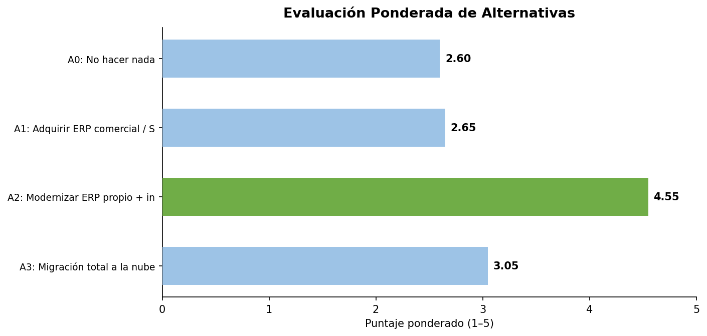
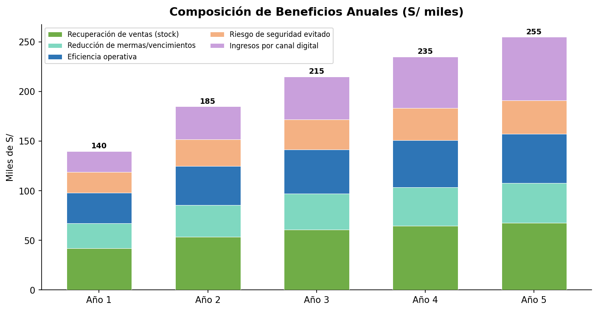
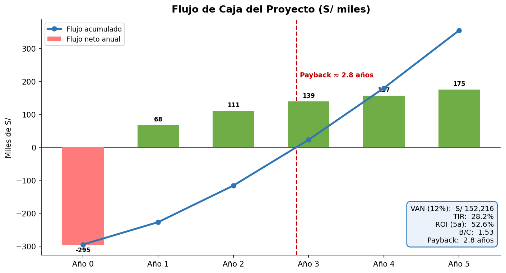

CE0113 - E2: Business Case del Proyecto¶
UNIVERSIDAD PERUANA UNIÓN
FACULTAD DE INGENIERÍA Y ARQUITECTURA
Escuela Académico Profesional de Ingeniería de Sistemas

ENTREGABLE 2: Business Case del Proyecto
Curso: EPE
RESPONSABLES:
Jhosef Anthony Quispe Huarilloclla
Jose Samuel Turpo Cauna
Yesenia Alejandra Gutierrez Anco
Juliaca – 2026
Resumen Ejecutivo¶
Este Business Case justifica la viabilidad y la conveniencia del proyecto de modernización de la plataforma y el gobierno de TI de «Salud Total SAC». Partiendo del problema identificado en el diagnóstico organizacional —una madurez digital intermedia y un gobierno de TI incipiente que exponen a la organización a riesgos críticos de seguridad y limitan su competitividad—, el proyecto propone fortalecer la seguridad, la infraestructura (red y centro de datos), la continuidad y las capacidades digitales y de datos, aprovechando el ERP propio «Articulos» ya existente.
Se evaluaron cuatro alternativas tecnológicas mediante una matriz de decisión ponderada; la opción seleccionada —modernizar el ERP propio sobre una infraestructura híbrida— obtuvo el mayor puntaje por su alineamiento estratégico, su seguridad y su aprovechamiento de los activos existentes.
El análisis económico confirma la viabilidad financiera del proyecto. Con una inversión inicial de S/ 295,000 y un horizonte de cinco años, el proyecto presenta un Valor Actual Neto (VAN) de S/ 152,216 a una tasa de descuento del 12 %, una Tasa Interna de Retorno (TIR) del 28.2 % —muy superior al costo de capital—, un retorno de la inversión (ROI) del 53 % y un período de recuperación (payback) de 2.8 años. La relación beneficio/costo es de 1.53. Estos indicadores, sumados a los beneficios cualitativos (protección de datos clínicos, cumplimiento y reputación), sustentan la recomendación de aprobar la iniciativa.
1. Justificación del Proyecto¶
1.1 Problema que se Resuelve¶
El diagnóstico organizacional evidenció que Salud Total SAC, pese a contar con un ERP propio y funcional, presenta una madurez digital intermedia y un gobierno de TI incipiente. Esto se traduce en riesgos críticos —credenciales y llaves criptográficas expuestas en el repositorio de código y una configuración de despliegue que puede destruir datos—, en brechas de continuidad y analítica, y en procesos manuales que elevan costos y errores. El problema central es que estas debilidades limitan el crecimiento de la organización y comprometen la seguridad y la disponibilidad de sus datos clínicos y financieros, restando competitividad frente a las grandes cadenas.
El proyecto resuelve este problema mediante una intervención por etapas que remedia los riesgos de seguridad, moderniza la infraestructura, asegura la continuidad y habilita capacidades de datos y canal digital.
1.2 Objetivos del Proyecto (SMART)¶
Los objetivos del proyecto se formulan bajo el criterio SMART (específicos, medibles, alcanzables, relevantes y temporales):
| ID | Objetivo SMART | Meta / Plazo |
|---|---|---|
| O1 | Remediar el 100 % de las vulnerabilidades críticas de seguridad identificadas (secretos versionados, despliegue inseguro). | 100 % en 3 meses |
| O2 | Implementar una infraestructura de red segmentada y segura, y un centro de datos con redundancia. | Operativa en 9 meses |
| O3 | Alcanzar una disponibilidad del servicio ≥ 99,9 % con respaldo y recuperación probados. | ≥ 99,9 % en 12 meses |
| O4 | Elevar la madurez digital promedio de 2,3 a 3,5 (de 5). | +1,2 en 18 meses |
| O5 | Habilitar un tablero de indicadores (BI) y un canal digital (MVP). | En 18 meses |
1.3 Beneficios Esperados¶
-
Reducción del riesgo legal y reputacional asociado a la fuga de datos clínicos.
-
Mejora de la eficiencia operativa y reducción de quiebres y mermas de inventario.
-
Mayor disponibilidad y continuidad del servicio.
-
Generación de nuevos ingresos mediante el canal digital.
-
Decisiones basadas en datos gracias a la analítica de negocio.
-
Base tecnológica escalable para el crecimiento y la apertura de nuevas sucursales.
2. Análisis de Alternativas¶
2.1 Alternativas Tecnológicas Consideradas¶
| Alternativa | Descripción |
|---|---|
| A0 — Statu quo | No invertir y mantener la situación actual; mínimo costo inmediato, pero conserva los riesgos críticos. |
| A1 — ERP comercial / SaaS | Reemplazar «Articulos» por un ERP farmacéutico comercial; alto costo y pérdida de la diferenciación y del activo propio. |
| A2 — Modernizar el ERP propio + infraestructura híbrida | Mantener y fortalecer «Articulos», implementando red, centro de datos, seguridad y nube híbrida (propuesta). |
| A3 — Migración total a la nube (SaaS) | Llevar toda la operación a servicios en la nube; flexible, pero con costo recurrente y consideraciones de residencia de datos clínicos. |
2.2 Criterios de Evaluación¶
Las alternativas se evaluaron con siete criterios ponderados según su relevancia estratégica para la organización:
| Criterio | Peso |
|---|---|
| Alineamiento estratégico | 20 % |
| Seguridad y cumplimiento | 20 % |
| Costo total (TCO) | 15 % |
| Aprovechamiento de activos (ERP propio) | 15 % |
| Escalabilidad y flexibilidad | 10 % |
| Tiempo de implementación | 10 % |
| Riesgo de la alternativa | 10 % |
2.3 Matriz Comparativa¶
Cada alternativa se calificó en una escala de 1 a 5 por criterio; el puntaje ponderado se obtiene multiplicando cada calificación por el peso del criterio. La alternativa A2 obtuvo el mayor puntaje.
| Criterio (peso) | A0 | A1 | A2 | A3 |
|---|---|---|---|---|
| Alineamiento estratégico (20%) | 1 | 3 | 5 | 3 |
| Seguridad y cumplimiento (20%) | 1 | 4 | 5 | 3 |
| Costo total (TCO) (15%) | 5 | 2 | 4 | 3 |
| Aprovechamiento de activos (ERP propio) (15%) | 5 | 1 | 5 | 2 |
| Escalabilidad y flexibilidad (10%) | 1 | 4 | 4 | 5 |
| Tiempo de implementación (10%) | 5 | 2 | 4 | 3 |
| Riesgo de la alternativa (10%) | 1 | 2 | 4 | 3 |
| Puntaje ponderado | 2.60 | 2.65 | 4.55 | 3.05 |

Figura 2.1 — Evaluación ponderada de alternativas.
Solución seleccionada: A2 — Modernizar el ERP propio sobre una infraestructura híbrida. Es la alternativa con mejor alineamiento estratégico, mayor seguridad y cumplimiento, y la que mejor aprovecha el activo digital existente (el ERP «Articulos»), con un costo y un riesgo equilibrados.
3. Evaluación de Beneficios¶
3.1 Beneficios Cuantificables¶
Se estiman los beneficios económicos anuales del proyecto, derivados de la mejora operativa, la recuperación de ventas, la reducción de pérdidas y los nuevos ingresos digitales. Los valores reflejan una curva de adopción creciente:
| Beneficio (S/ miles) | Año 1 | Año 2 | Año 3 | Año 4 | Año 5 |
|---|---|---|---|---|---|
| Recuperación de ventas (menos quiebres) | 42 | 56 | 65 | 71 | 77 |
| Reducción de mermas y vencimientos | 25 | 33 | 39 | 42 | 46 |
| Eficiencia operativa (ahorro de horas) | 31 | 41 | 47 | 52 | 56 |
| Riesgo de seguridad evitado (valor esperado) | 21 | 28 | 32 | 35 | 38 |
| Ingresos por canal digital | 21 | 27 | 32 | 35 | 38 |
| Total beneficios | 140 | 185 | 215 | 235 | 255 |

Figura 3.1 — Composición de beneficios anuales.
3.2 Beneficios Cualitativos¶
-
Protección de la privacidad y la confidencialidad de los datos clínicos de los pacientes.
-
Cumplimiento de la normativa (Ley N.° 29733, DIGEMID) y reducción del riesgo de sanciones.
-
Fortalecimiento de la reputación y la confianza de los clientes y reguladores.
-
Mejora de la experiencia del cliente (atención multicanal, delivery).
-
Mayor capacidad de decisión basada en datos para la gerencia.
-
Cultura digital y reducción de la dependencia de personas clave.
3.3 Indicadores de Valor¶
| Indicador de valor | Línea base | Meta |
|---|---|---|
| Madurez digital promedio (1–5) | 2,3 | 3,5 |
| Disponibilidad del servicio | — | ≥ 99,9 % |
| Vulnerabilidades críticas abiertas | 2 | 0 |
| Quiebres de stock | Alto | −40 % |
| Participación del canal digital en ventas | 0 % | 8–10 % |
4. Estimación de Costos¶
4.1 Inversión Inicial (CAPEX)¶
La inversión inicial requerida para el proyecto asciende a S/ 295,000, distribuida de la siguiente manera:
| Concepto | Monto (S/) |
|---|---|
| Infraestructura de servidores y almacenamiento (clúster, SAN) | 85,000 |
| Equipos de red y seguridad perimetral (firewalls, switches, APs) | 48,000 |
| Energía, climatización y adecuación física del data center | 32,000 |
| Licencias de software (virtualización, SO/AD, BD, monitoreo) | 28,000 |
| Desarrollo: remediación de seguridad + BI + canal digital (MVP) | 55,000 |
| Implementación, migración y capacitación | 32,000 |
| Contingencia (5 %) | 15,000 |
| Total inversión inicial (CAPEX) | 295,000 |
4.2 Costos Operativos y de Mantenimiento (OPEX)¶
Los costos operativos anuales recurrentes (servicios en la nube, conectividad, energía, soporte y mantenimiento) se estiman con un ligero incremento anual:
| Concepto (S/ miles) | Año 1 | Año 2 | Año 3 | Año 4 | Año 5 |
|---|---|---|---|---|---|
| Servicios en la nube (DR, respaldo) | 12 | 12 | 13 | 13 | 14 |
| Conectividad (doble ISP + WAN) | 18 | 18 | 19 | 19 | 20 |
| Energía del centro de datos | 8 | 8 | 8 | 9 | 9 |
| Soporte y mantenimiento de hardware/licencias | 14 | 15 | 15 | 16 | 16 |
| Servicios de TI / gestión | 20 | 21 | 21 | 21 | 21 |
| Total OPEX | 72 | 74 | 76 | 78 | 80 |
El costo total de propiedad (TCO) a cinco años, sumando la inversión inicial y los costos operativos, asciende a S/ 675,000.
5. Evaluación Económica y Financiera¶
A partir de los beneficios y los costos estimados se construye el flujo de caja del proyecto a cinco años y se calculan los indicadores de rentabilidad, empleando una tasa de descuento (costo de oportunidad del capital) del 12 %.
5.1 Flujo de Caja¶
| S/ miles | Año 0 | Año 1 | Año 2 | Año 3 | Año 4 | Año 5 |
|---|---|---|---|---|---|---|
| Beneficios | — | 140 | 185 | 215 | 235 | 255 |
| Inversión + OPEX | (295) | (72) | (74) | (76) | (78) | (80) |
| Flujo neto | (295) | 68 | 111 | 139 | 157 | 175 |
| Flujo acumulado | (295) | (227) | (116) | 23 | 180 | 355 |

Figura 5.1 — Flujo de caja del proyecto e indicadores financieros.
5.2 Indicadores de Rentabilidad¶
| Indicador | Resultado | Interpretación |
|---|---|---|
| VAN (Valor Actual Neto) | S/ 152,216 | > 0 → el proyecto crea valor |
| TIR (Tasa Interna de Retorno) | 28.2 % | > COK (12 %) → rentable |
| ROI (5 años) | 53 % | Retorno sobre la inversión |
| Relación Beneficio/Costo | 1.53 | > 1 → beneficios superan costos |
| Payback (simple) | 2.8 años | ≈ 34 meses |
| Payback (descontado) | 3.3 años | Recuperación con descuento |
Conclusión financiera. Todos los indicadores son favorables: el VAN es positivo (S/ 152,216), la TIR (28.2 %) supera ampliamente el costo de capital, y la inversión se recupera en 2.8 años. El proyecto es financieramente viable y conveniente.
5.3 Análisis de Sensibilidad¶
Para evaluar la robustez del resultado se analizan escenarios pesimista (beneficios −20 %) y optimista (beneficios +15 %):
| Escenario | VAN aprox. | Conclusión |
|---|---|---|
| Pesimista (beneficios −20 %) | ≈ S/ 18,000 | Aún positivo: el proyecto resiste |
| Base | S/ 152,216 | Viable |
| Optimista (beneficios +15 %) | ≈ S/ 253,000 | Altamente rentable |
Incluso en el escenario pesimista el VAN se mantiene positivo, lo que confirma la solidez de la decisión de inversión.
6. Riesgos Iniciales del Proyecto¶
Se identifican los riesgos estratégicos del proyecto, con su evaluación preliminar de impacto y probabilidad, y las estrategias de mitigación:
| ID | Riesgo | Prob. | Impacto | Estrategia de mitigación |
|---|---|---|---|---|
| R1 | Desviación de presupuesto y plazos | Media | Alto | Gestión por etapas; quick wins primero; contingencia. |
| R2 | Resistencia al cambio del personal | Media | Medio | Capacitación y gestión del cambio; involucramiento temprano. |
| R3 | Subestimación de beneficios (adopción lenta) | Media | Alto | Curva de adopción conservadora; metas por hitos. |
| R4 | Brecha de seguridad durante la transición | Baja | Crítico | Remediación prioritaria; despliegue controlado. |
| R5 | Dependencia de proveedores (nube/licencias) | Media | Medio | Estándares abiertos; portabilidad; multi-proveedor. |
| R6 | Indisponibilidad por migración | Baja | Alto | Migración en ventanas; respaldo y plan de reversión. |
| R7 | Incumplimiento regulatorio en datos | Baja | Crítico | Cifrado, controles y auditoría; asesoría legal. |
Los riesgos de mayor severidad (R4 y R7, de impacto crítico) se mitigan priorizando la remediación de seguridad y los controles de protección de datos desde el inicio del proyecto, lo que además explica la secuencia de la hoja de ruta.
7. Conclusión y Recomendación¶
El presente Business Case demuestra que el proyecto de modernización de la plataforma y el gobierno de TI de Salud Total SAC es viable, conveniente y estratégicamente alineado. La alternativa seleccionada —modernizar el ERP propio sobre una infraestructura híbrida— es la mejor evaluada por su alineamiento, seguridad y aprovechamiento de los activos existentes.
Desde la perspectiva económica, el proyecto presenta un VAN positivo de S/ 152,216, una TIR de 28.2 %, un ROI de 53 % y un payback de 2.8 años, con una relación beneficio/costo de 1.53. El análisis de sensibilidad confirma que la inversión es robusta incluso en escenarios conservadores. A ello se suman beneficios cualitativos decisivos: la protección de los datos clínicos, el cumplimiento normativo y el fortalecimiento de la reputación.
Recomendación: se recomienda aprobar el proyecto y ejecutarlo por etapas, iniciando por la remediación de las vulnerabilidades críticas de seguridad —de máximo riesgo y mínimo costo— y avanzando según la hoja de ruta hacia la infraestructura, la continuidad, la analítica y el canal digital.
Anexo: Supuestos del Modelo¶
-
Horizonte de evaluación: 5 años. Tasa de descuento (COK): 12 %.
-
Inversión inicial: S/ 295,000 (CAPEX, año 0).
-
Beneficios con curva de adopción creciente; costos operativos con incremento anual leve.
-
Beneficios totales (5 años): S/ 1,030,000; costos totales (TCO): S/ 675,000.
-
Valores en soles (S/); cifras redondeadas. Indicadores calculados sobre el flujo de caja neto.